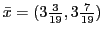

- (7 points) Show that is an appropriate point to start the affine scaling algorithm.
- (6 points) Derive the associated scaled standard form corresponding to the solution .
- (7 points) The move direction for the affine scaling algorithm is . Show that this direction is improving and feasible at .
- (6 points) Compute the maximum possible steplength in the direction .
- (7 points) For this problem, why must a log barrier method give a direction from that is a multiple of ?
- (7 points)
The logarithmic barrier subproblem is
Consider the integer program
The optimal solution to the linear programming relaxation of this problem is . The problem is illustrated below.
- (6 points) Show that the constraint is a valid constraint (that is, the constraint is satisfied by all feasible solutions to ).
- (6 points) Solve graphically the LP relaxation with the extra constraint .
- (8 points) Find a valid constraint that is violated by the point you found in part (b). Add the constraint to the LP relaxation and graphically solve it again.
Use Dijkstra's algorithm to find the shortest path from vertex 1 to vertex in the following graph, where the edge lengths are given on the graph:
Burgess Fuel is planning its purchases of heating oil for the next four months. The forecasted demands and purchase costs per gallon are contained in the table:
| month 1 | month 2 | month 3 | ||
| demand | 7000 | 8000 | 3000 | |
| price per gallon | $2 | $3 | $4 |